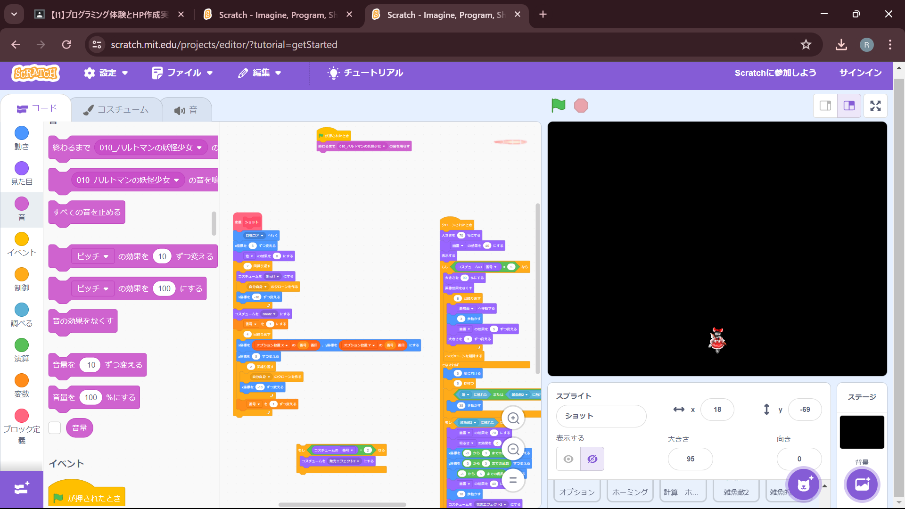

1-2 ゲーム

1.内容
スクラッチを使って、ミニゲームを作ろうというものでした。
2.感想
先ほどにも書いたように、小学校からスクラッチを使って、ゲームを作っていたため、かなりの力作ができたのではないかと思います。課題は、ものを上から落として、それをプレイヤーがキャッチするものを作るというものでしたが、私は「東方」というゲームを再現しました。具体的には、落ちてくるもを敵にし、まっすぐ落ちるのは芸がないので少し動かしてみたり、プレイヤーが攻撃できるようにしました。また、スタートした時に音楽が流れるようにしたり、攻撃モーションをもう一つ追加したりしました。ただ、時間が足りず、プレイヤーのHPが無限になってしまいましたが、かなりのクオリティのものができました。